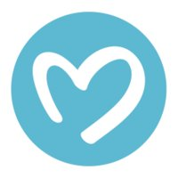
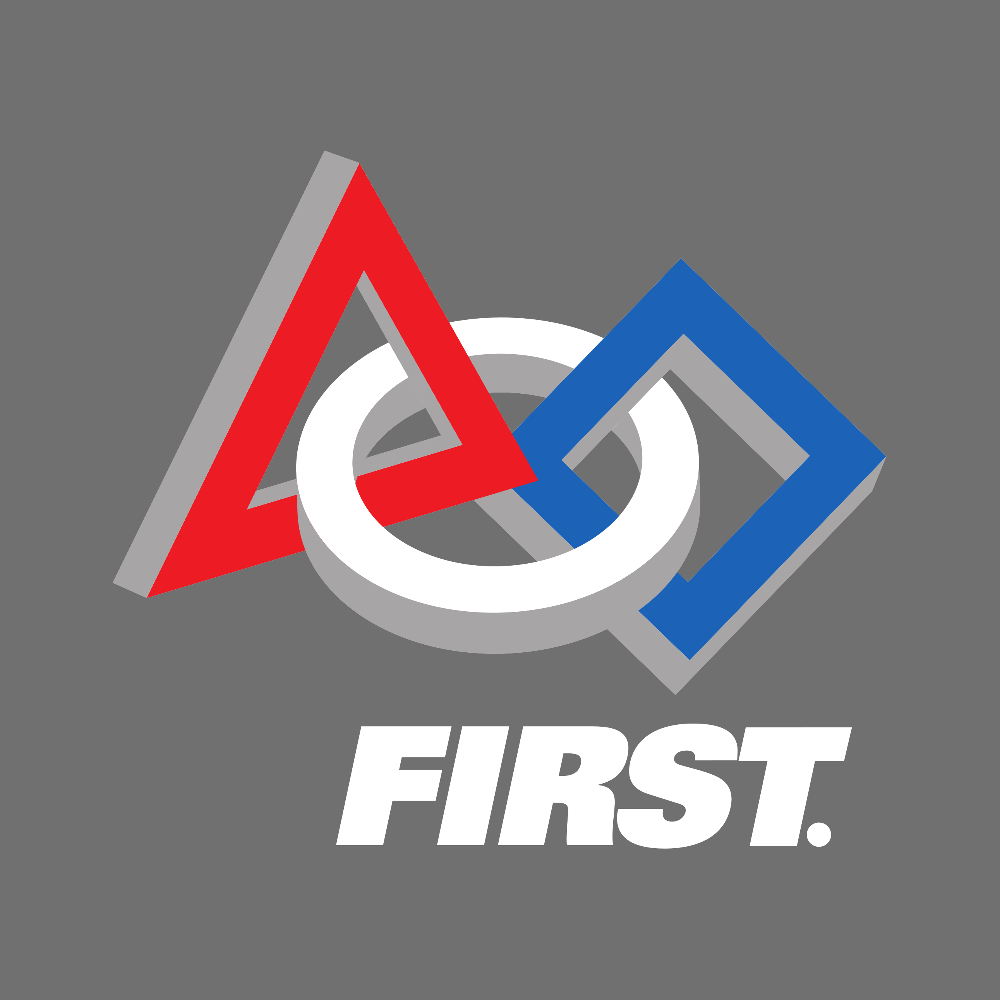

K. Rodman Mannix
About
Events
Projects
Experience
Hobbies
Styles
Bootstrap
Foundation
Custom



![Developed a Java applet to aid teachers in instructing students phonetic sounds. Users can select a variety of filter options such as dialect (British or American), word length, and number of syllables to populate a list of words that include certain phonetic sounds. This applet scans a database of over 70,000 words to search for potential words that include the phonetic sounds a user chooses that fit the criteria defined by the filters. The intent of the project is to expedite the process of finding words to use in teaching reading and writing skills. This mentor for this project was Dr. Devin Kearns of the Boston University School of Education.](img/experience/sed_logo.png "Software Developer/Research Assistant")